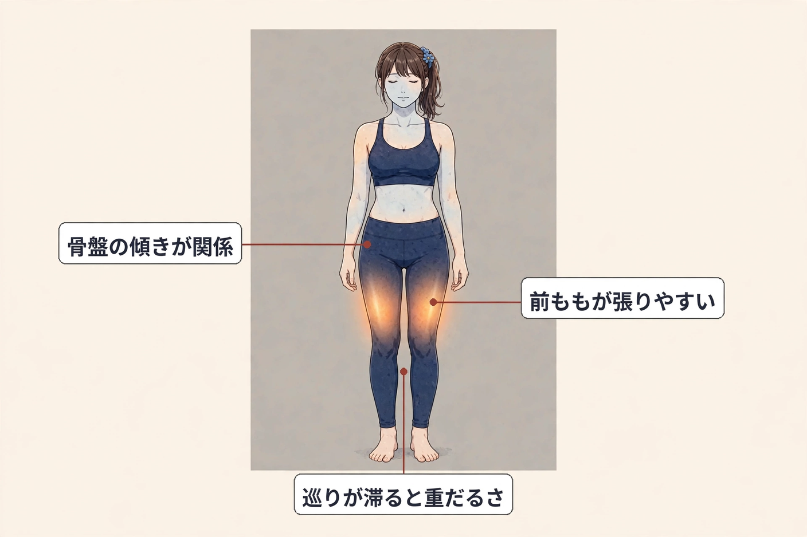

太ももの外側の張り
美容整体ステラ・ポラリス東三国｜大阪市淀川区東三国・東三国駅徒歩5分・女性向け

骨盤の横の出っ張りを解消。股関節の調整
太ももの外側の張りは、股関節の向きや骨盤の傾き、歩き方のクセによって、外側の筋肉に負担がかかり続けることで気になりやすくなります。パンツを履いたときに横のラインが気になる、脚の付け根の外側が出っ張って見える、というご相談が多い部位です。内ももやお尻の筋肉が使いにくいと、外側ばかりが働くアンバランスが生まれると言われています。このページでは、太ももの外側が張る仕組みと、外側のラインがすっきり見える状態を目指す当サロンでのケア、ご自宅でできるセルフケアをご案内します。まずは下のチェックで、ご自身の状態を確かめてみてください。
ご予約はこちら（Coubic）こんなお悩みありませんか
- パンツを履くと、太ももの外側のラインが気になる
- 脚の付け根の外側が、出っ張って見える
- 横向きに寝ると、外側の張りが当たって気になる
- 内ももは細いのに、外側だけ張っている感じがする
- 歩くとき、体重が外側にかかっている気がする
- お尻の横あたりが固く、押すと痛気持ちいい
- スキニーパンツを、すっきり履きこなしたい
当てはまる項目が多いほど、股関節や骨盤のバランスの偏りで、外側の筋肉ばかりが働いている目安とされています。外側の張りは、外側だけの問題ではなく、内ももやお尻とのバランスが関係しているのがポイントです。次のセルフチェックで、今の脚の状態の傾向を確かめてみましょう。
簡単セルフチェック（立ち姿と体重のかけ方チェック）
鏡の前でできる、太もものラインと体重のかけ方の傾向を知るための簡単な方法です。
- 鏡の前にまっすぐ立ち、太ももの外側のラインと、骨盤の高さの左右差を確認します。
- 片足に体重を乗せたときと、両足均等に立ったときで、外側の張り感の違いを確認します。
- 片足立ちで骨盤が大きく傾く、普段から片側に体重を乗せるクセがある場合は、外側に負担がかかりやすい状態の目安と言われています。
※これは診断ではありません。ご自身の状態の傾向を知る目安としてお使いください。
太ももの外側の張りの原因と仕組み
股関節の向きと骨盤の傾き
太ももの外側の張りの背景には、股関節の向きや骨盤の傾きがあります。股関節が内側を向きやすい姿勢や、片側に体重を乗せる立ち方が続くと、太ももの外側の筋肉や、骨盤の横につく筋肉が常に働かされ、張りが強くなりやすいと言われています。図1のように、外側の張りは股関節・骨盤・歩き方を含めた全体のバランスの結果として表れます。

図1 太ももの外側の張りで起こりやすい変化と、バランスが整った脚のイメージ。脚の状態には個人差があります。
外側ばかり働くアンバランス
内ももやお尻の筋肉が使いにくい状態では、体を支える仕事を外側の筋肉が一手に引き受けることになります。働きすぎる筋肉は張りが強くなり、出っ張って見える原因にもなります。反対に、内ももやお尻が使えるようになると、外側の負担は分散され、張りもゆるみやすくなります。ほぐすことと、使う感覚を取り戻すことの両方が大切です。
歩き方のクセ
歩くときに体重が外側へ流れやすい歩き方や、足の外側で地面を蹴るクセが続くと、外側の筋肉への負担が積み重なります。靴底の外側の減りが早い方は、歩き方のクセが出ているサインかもしれません。日常の歩き方を見直すことは、張りの根本にある負担のかかり方を変えることにつながります。
パンツラインの印象
太ももの外側は、パンツのシルエットを決める大きなポイントです。外側の出っ張りが目立つと、脚全体が太く見えたり、ラインが崩れて見えたりします。反対に、外側の張りがゆるんでラインが整うと、同じパンツでもすっきりした印象になります。体重の変化に頼らず、筋肉のバランスからラインを整えるケアは、服を楽しみたい方に選ばれています。
セルフケアで足りる場合・サロンケアが向く場合
張りが軽く、歩き方や立ち方を意識することで感覚が変わる日が多い場合は、まずご自宅でのセルフケアを続けて様子を見る方法があります。一方で、外側の張りが固くて自分ではゆるめにくい、内ももやお尻を使う感覚がつかみにくい、パンツのラインを本格的に整えたいという場合は、サロンでのケアが向いている目安になります。サロンでは、股関節まわりの動きを確認し、張りやすい外側やお尻の横を丁寧にゆるめたうえで、内ももやお尻を使う感覚もご案内することで、施術後に「脚のラインがすっきり見える」と感じやすい状態を目指します。どちらが正解というものではなく、今の状態に合わせて選ぶことが大切です。
当サロンでのケア
当サロンの太ももケアは、「外側の張りをゆるめ、内ももとお尻が使えるバランス」を目指す組み立てです。股関節まわりの動きを確認しながら、部位と目的に合わせて3つの手技を組み合わせます。
美容整体：骨盤と股関節のバランスを整え、外側に負担がかかりにくい土台をつくることを目的に進めます。
アロマオイルマッサージ：張りやすい太ももの外側やお尻の横をオイルで丁寧にゆるめ、巡りが流れやすい状態を目指します。香りに包まれるリラックス感の高いケアです。
もみほぐし：股関節まわりの固まりやすい筋肉をほぐし、あわせて内ももやお尻を使う感覚のご案内も行います。歩くときの体重のかけ方のポイントもお伝えします。
ケアを通して目指すのは、こんな変化です。
- 太ももの外側のラインが、すっきり見える印象へ
- パンツスタイルをきれいに着こなせるような仕上がりへ
- 内ももやお尻を使う感覚がつかめ、歩き方が安定する体感へ
- お尻の横の張りがゆるんで、横向きで寝るのも楽な感覚へ
- 脚全体のラインが整って、後ろ姿の印象も軽やかへ
施術後は脚のラインを鏡で確認しながら、歩くときの体重のかけ方のポイントもお伝えします。パンツスタイルをすっきり着こなしたい方のケアにもおすすめです。ご自宅で続けやすい内ももの体操もご案内します。

施術の流れ
ご来店後、気になる部位やお悩み、ご希望の強さなどをうかがいます。完全個室のため、周りを気にせずお話しいただけます。
股関節の動きや骨盤の傾き、太ももの張りの状態などを一緒に確認し、その日の状態に合わせた施術の進め方をご案内します。
美容整体を中心に、ご希望に応じてアロマオイルマッサージ、もみほぐしを組み合わせて進めます。強さは途中でも調整できます。
施術後の状態を確認し、ご自宅で続けやすいセルフケアのポイントをお伝えします。次回の目安についても、ご希望があればご案内します。
料金
| コース | 通常価格 | キャンペーン価格（12/25まで） |
|---|---|---|
| 80分 | ― | 3,000円 |
| 100分 | 10,000円 | 4,000円 |
| 120分 | ― | 5,000円 |
クリスマスキャンペーンは12月25日まで、ご新規様もリピーターの方も対象です。施術内容は当日の状態とご希望に合わせて組み立てます。
ご自宅でできるセルフケア
- お尻の横のストレッチ：仰向けで片足を反対側の膝に乗せ、4の字の姿勢で抱えます。左右それぞれ20〜30秒、1日1〜2回が目安です。
- 内ももエクササイズ：椅子に座り、膝の間にクッションを挟んで10秒キープします。5回を1セットとして、1日2セットが目安です。
- 外側のほぐし：太ももの外側を手のひらや拳で、痛気持ちいい強さでゆっくりほぐします。入浴後の体が温まった時間に行うのがおすすめです。
- 両足均等の立ち方：立つときは両足に均等に体重を乗せ、片足重心のクセに気づいたら直す習慣をつけます。
ご自宅でのケアに：セルフケア資料ライブラリ（無料）
このお悩みに合わせたセルフケアの考え方を、無料の資料ライブラリでご紹介しています。
セルフケア資料ライブラリを開く →
受診の目安
股関節の痛みや、脚を動かしにくい症状がある場合は、施術の前に医療機関への受診をおすすめします。また、脚のしびれを伴う場合も、医療機関でご相談ください。
よくある質問
Q. 初めてでも大丈夫ですか？
はい。当サロンは完全予約制・完全個室で、1日3組までのご案内です。最初にカウンセリングで脚の状態や気になる部位をうかがい、無理のない内容から始めます。施術の前後で脚のラインを鏡で確認しながら「すっきり見える」「歩きやすい」といった感覚の違いを一緒に確かめますので、初めての方も安心してご利用いただけます。
Q. 施術は痛いですか？
強さは、ご希望をうかがいながら調整します。張りの強い外側の部位は、痛気持ちいいと感じる圧でほぐしていくことが多い部位です。感じ方には個人差がありますので、施術中も遠慮なくお声がけください。
Q. コースはどう選べばいいですか？
80分・100分・120分のコースがあり、ケアしたい部位の広さやお時間のご都合に合わせて選べます。太もものケアで骨盤まわりからお尻、脚全体までゆっくり整えたい方には、100分が選ばれることが多いコースです。迷われる場合は、ご予約の際にお気軽にご相談ください。
Q. 場所と予約方法を教えてください。
大阪市淀川区東三国、東三国駅から徒歩5分です。完全予約制のため、予約サイト（Coubic）またはLINE公式アカウントからご予約をお願いしています。
Q. 男性も受けられますか？
当サロンは女性向けのため、男性の方は、同じ東三国の男性専用整体院「北辰堂」をご案内しています。
施術者について
平賀建人（施術歴30年）
鍼灸師・登録販売者・アロマセラピスト・パーソナルトレーナーの資格を持ち、美容整体を中心に、アロマオイルマッサージ、もみほぐしを、その日の状態とご希望に合わせて組み合わせて施術します。このページの内容は、施術者の知識と経験をもとに作成しています。

料金・ご予約
ご新規様もリピーターの方も 12/25まで
80分 3,000円／100分 4,000円／120分 5,000円
通常価格は100分10,000円です。施術内容はご希望に合わせて組み立てます。
営業時間：月〜土 17:00〜23:00／日 10:00〜23:00（完全予約制）｜電話：080-2468-3086
大阪府大阪市淀川区東三国2丁目25番4号101（東三国駅徒歩5分）